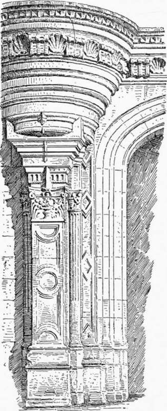
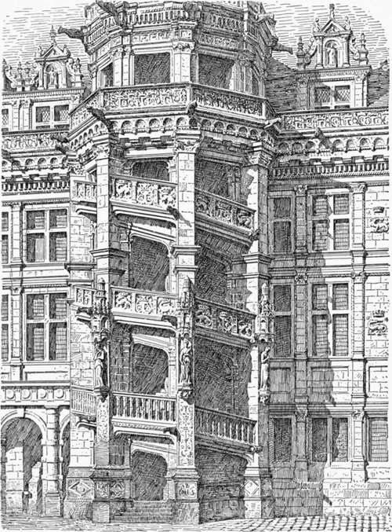

Architecture Of The Early Renaissance In France. Part 3
Description
This section is from the book "Character Of Renaissance Architecture", by Charles Herbert Moore. Also available from Amazon: Character of Renaissance Architecture.
Architecture Of The Early Renaissance In France. Part 3
Rideau, and of similar character, are Chenonceaux and La Rochefoucauld. Of Chenonceaux the portal (Fig. 114) is worthy of notice as an instance of a different manifestation of the survival of Flamboyant ideas in the treatment of neo-classic details. In this portal we have again the three-centred form of arch, with a keystone and continuous imposts.1 The jambs and archivolt are in three planes, or orders, of shallow projection, with simple mouldings of semi-Flamboyant effect. No entablature surmounts this portal, but a corbelled cornice supporting a heavy balcony passes over the arch. This balcony has a curved ressaut at each end carried on a massive corbel in graduated rings of overhanging masonry, with a compound support beneath consisting of a stout pilaster and two small shafts. The Flamboyant idea running through this nondescript scheme is shown in the depressed form of the arch, and by the simulated interpenetrations at the imposts of the pilasters.

Fig. 113.—Chateaudun.
Fig. 114. —Part of the Portal of Chenonceaux.
In La Rochefoucauld we have an instance of a mediaeval fortified castle transformed into a palatial residence. The most noticeable features here are the superimposed arcades of the court. In these arcades we have orders of pilasters used in the Roman way to frame in the arches, but these arches have the Flamboyant three-centred form. In the top story the number of arches is doubled, and the entablature over them is crowned with an ornamental parapet and finials. The vertical lines of the superimposed pilasters, made continuous by ressauts in the entablatures and carried up through the parapet by the finials, give a semi-Gothic expression to the ancient Roman scheme.
In those parts of the vast chateaux of Blois and Chambord that were built in the time of Francis I a richer phase of this early French Renaissance architecture is found. The eastern wing of Blois, which had been begun by Louis XII, illustrates this. On the side facing the court the walls are panelled, not as they sometimes were in the earlier buildings, as at La Rochefoucauld, by interpenetrating mouldings of Flamboyant profiling, but by three superimposed orders of pilasters, in which a continuity of upright lines is given by shallow ressauts in the entablatures (Fig. 115). The pilasters are here irregularly spaced in conformity with the window openings of the work that had been begun, and considerably advanced, under the preceding reign; and have the novel addition of ornamented bead mouldings set on the edges of the pilasters, and along the under edges of the entablatures, while in each of the panels thus framed the salamander and crown are carved in relief. In the deep and elaborate cornice, dentils and modillions and the egg and dart are worked in with Gothic gargoyles and a corbel-table; while a rich parapet crowns the whole, and dormers of picturesque form, with pseudo-classic orders surmounted by gables and pinnacles, rise against the vast high-pitched roofs which are further broken by ornamented chimney-stacks. A survival of the later Gothic habit of design is further shown in the continuity of upright lines obtained by the ressauts already remarked. But the most remarkable feature of this fagade is the great polygonal staircase tower that rises through it. Four vast piers like buttresses, reaching from the ground to the main cornice which is carried out so as to crown them, are treated like colossal pilasters with rich Corinthianesque capitals, and are banded above the middle with mouldings of classic profiling. Yet on the face of each of these members is a corbelled niche, with a rich canopy and statue in late Gothic style. These piers are connected by three stages of ramps with panelled parapets elaborately ornamented with small pilasters, carvings in relief, and gargoyles issuing from their base mouldings. The whole composition is crowned with a dormer having a square opening on each side, grouped pilasters on the angles, an entablature with compound ressauts over the pilasters, and with gargoyles reaching from the cornice, and a balustrade over all.
Fig. 115. — Part of the court fagade of Blois.
1 I use Willis's term, " continuous impost," for an impost in which the jambs pass into the arch without the interposition of a capital, and without change of profiling.
The reader should consider well the meaning of all this, and observe how the persistence of the native French habits of design, without the logic of the former time, was still giving a largely mediaeval aspect to works in which details from the Italian Renaissance, modified and combined in strangely new ways, were being more and more freely introduced.
On the garden side this wing of Blois has a different design, and shows a survival of the Flamboyant depressed arch in the window openings necessitated by the form of the earlier fagade, which is incased in that of Francis I.1 The windows of this earlier fagade were spaced and proportioned so as to make wide and narrow voids and solids alternate in a very irregular manner. In the work of the sixteenth century, which overlays this, superimposed pilasters are set in pairs on the wider solids, and single ones adorn the narrow piers. The pilasters of the lower order rest on tall pedestals supported on spurs rising out of the batter wall of the basement, while the upper order is set on plinths resting on the entablature of the order beneath. This upper order has a plain corbel-table in place of an entablature, with a simple cornice, and gargoyles over the pilasters. Over this is the novel feature of an open gallery covered by an extension of the main roof which is held up by columns of no distinct order, with a balustrade in each interval. Similar galleries were afterward in some instances produced by extending the roofs over originally uncovered terraces below the eaves, supporting the extension on wooden posts — as at La Rochefoucauld.
1 Du Cerceau's plate (Les Plus Excellents Bastiments de France, vol. 2, plate 4) is incorrect, like most of his other plates, in giving the semicircular form to the openings of this facade.
Continue to:
- prev: Architecture Of The Early Renaissance In France. Part 2
- Table of Contents
- next: Architecture Of The Early Renaissance In France. Part 4